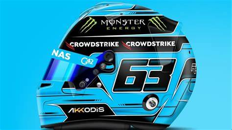
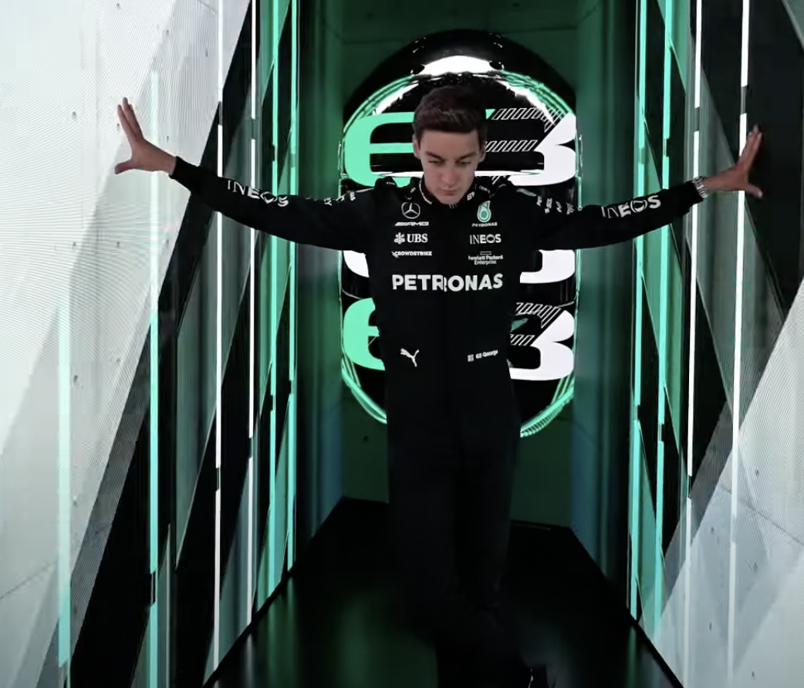

George William Russell
- Team: Mercedes
- Land: Vereinigtes Königreich
- Geburtsort: King's Lynn, England
- Geburtsdatum: 15.02.1998
- Alter: 26
- Podien: 14
- Grands Prix gefahren: 125
- Weltmeisterschaften: 0
- Team: Mercedes
- Fahrernummer: 63
Er ist der Fahrer mit dem Motto: "Im Zweifelsfall Vollgas". George Russell hat während seiner gesamten bisherigen F1-Karriere davon gelebt und seinen erfahrenen Teamkollegen Robert Kubica in seiner Rookie-Saison bei allen 21 Grands Prix hinter sich gelassen, Williams 2021 wieder auf das Podium gebracht und 2022 seinen ersten Rennsieg mit Mercedes erzielt. Dieser brillante Speed an der Grundlinie kam Russell zugute, als er auf seinem Weg in die Formel 1 Titel sammelte. Der Brite stürmte 2017 in die GP3-Meisterschaft und holte sich 2018 unter immensem Druck die Formel-2-Krone. Weltmeister Mercedes erkannte sein Potenzial und verpflichtete ihn 2017 für sein Juniorenprogramm, als Russell bereits einen DTM-Vertrag auf dem Tisch hatte. Er sammelte mehr Erfahrung in Trainings mit Force India und Tests für die Silberpfeile, bevor er seinen Williams-Renneinsatz mit Mercedes-Motor erhielt. Die Weigerung, seinen Rivalen Boden zu überlassen - und das Engagement für einen trickreichen Pass - untermauert Russells Siegermentalität. Und das war es, was ihm die Nominierung einbrachte, um Lewis Hamilton für einen einmaligen Mercedes-Einsatz für Sakhir 2020 zu ersetzen, als der amtierende Champion an Covid-19 erkrankte. Russell verpasste die Pole nur um 0,026 Sekunden und ließ dann Mercedes-Routinier Valtteri Bottas hinter sich. Nur ein verpatzter Boxenstopp und ein herzzerreißender Reifenschaden in der Schlussphase verhinderten den fast sicheren ersten Sieg des aufstrebenden Super-Subs. 2021 behielt er bei Williams den Kopf unten und holte seine ersten Punkte und sein erstes Podium, während er die ganze Zeit den größeren Preis im Auge behielt. Nachdem er bewiesen hatte, dass er ein harter Arbeiter und ein hartnäckiges Talent ist, kam dieser Preis in Form der Chance, gegen seinen Landsmann und siebenfachen Champion Hamilton auf identischen Maschinen anzutreten. Es war eine Chance, die Russell genossen hat, und er holte in Brasilien seinen ersten F1-Sieg - und den einzigen Sieg von Mercedes im Jahr 2022. Die Saison 2023 erwies sich als härter, aber wenn die Silberpfeile zurückschlagen und ein wirklich konkurrenzfähiges Auto zur Verfügung stellen können, winkt sicherlich ein Titelkampf. Eine große Herausforderung, aber wie immer wird "Russell the Rocket" Vollgas geben.
